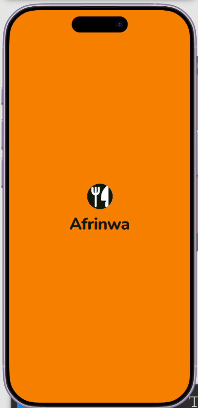
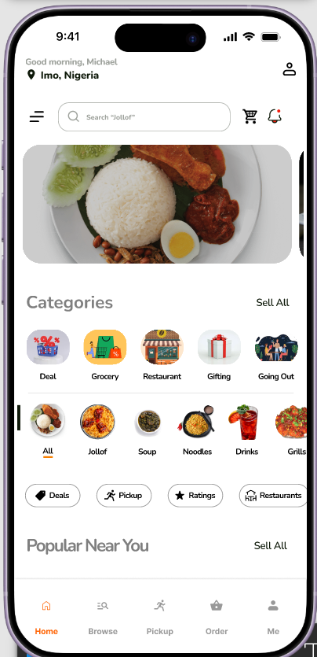
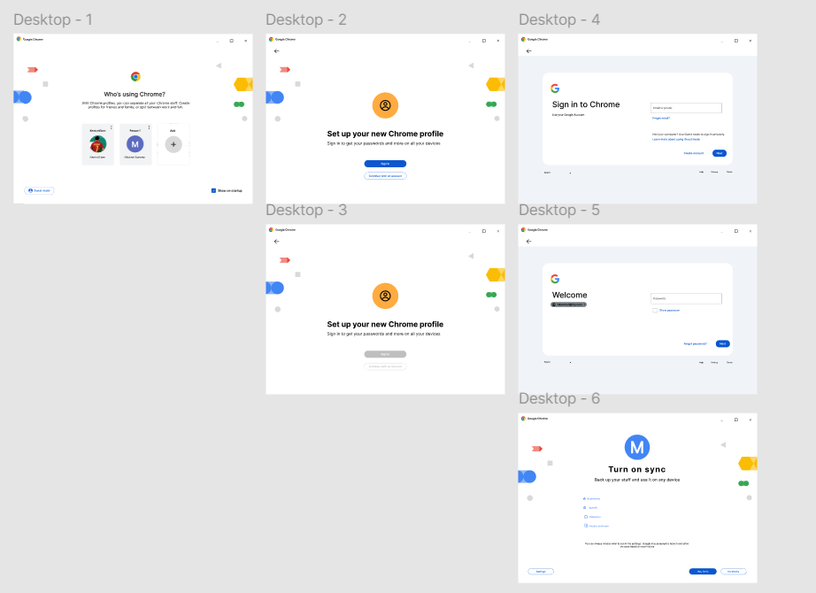
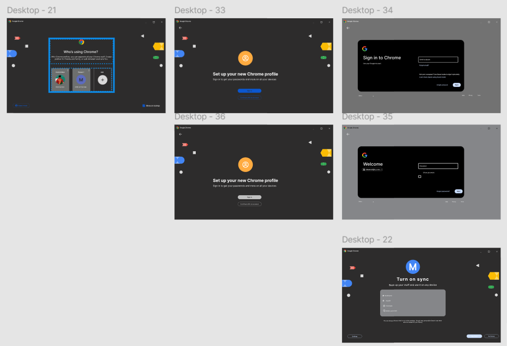

01 · Food & delivery · Mobile app
Afrinwa Foods
A food discovery and delivery app that helps people in Nigeria find nearby restaurants and food sellers, with familiar local meals front and centre.
I'm a Product and UI/UX Designer with a foundation in front-end development and engineering. I combine user-centred thinking, visual design and technical understanding to create intuitive, accessible products.
I'm Ezenwa Michael C., a UI/UX and Product Designer with a B.Eng. in Agricultural Engineering from Michael Okpara University of Agriculture, Umudike. Engineering taught me to define problems clearly and work within real constraints. I bring that same approach to digital products.
I design in Figma, from user flows and wireframes to interactive, high-fidelity prototypes. My hands-on knowledge of HTML, CSS, JavaScript and React helps me design screens that developers can actually build.
My work at the university Biometric Centre and as a field data officer with Abia Atlas kept me close to how people really use forms, systems and data. I want to build products that improve usability, save people time and are genuinely useful.
A UI/UX and product designer with a front-end and engineering foundation.
User flows, wireframes, design systems, high-fidelity UI and interactive prototypes.
Inclusive, accessible products that prevent errors and are easy to use.
I design in components and states, and I understand how the front end is built.


A food discovery and delivery app that helps people in Nigeria find nearby restaurants and food sellers, with familiar local meals front and centre.


A complete desktop first-run flow, from choosing a profile to signing in and turning on sync, designed in light and dark mode.
Independent practice project. Not affiliated with or commissioned by Google.
Reserved for the next project. It will appear here when it's ready.
The same steps I followed on Afrinwa Foods, end to end, as the only designer.
Define what the product must do and who it's for before drawing anything.
Map the core journeys and screen structure in low fidelity.
Brand mark, colour palette and typography that fit the audience.
Reusable Figma components with auto-layout, variants and states.
Clear hierarchy, readable contrast and one primary action per screen.
Link screens into a clickable prototype, review it and iterate.
UI/UX Designer with a strong foundation in front-end development and engineering. Skilled in Figma, prototyping, wireframing, user research and accessibility, with hands-on HTML, CSS, JavaScript and React. I combine my Agricultural Engineering background with digital design to deliver functional, visually engaging interfaces that improve usability and productivity.
Michael Okpara University of Agriculture, Umudike, Abia State, Nigeria
Credential ID UC-fff3f3e7-a738-43e7-93cc-367a2ff41883
Interactive components, user flows, navigation and checkout, and a complete high-fidelity prototype for stakeholder presentation.
Recruiters, design teams and clients: I'd love to hear about your role, product or design challenge.
A food discovery and delivery app that helps people in Nigeria find restaurants and food sellers near them, and get their food through a reliable delivery system.
Afrinwa celebrates familiar local meals such as jollof, soups, grills and noodles, and puts them at the centre of the experience. I owned the project end to end: branding and logo, iconography, a component library, wireframes, UI design and an interactive prototype.
Timeline: self-paced personal project.
Finding good food nearby is harder than it should be. Local restaurants and independent sellers are scattered across platforms and word of mouth, and when people do order, delivery can be unpredictable.
How might we make it fast and enjoyable to discover nearby food, and trust that the order will arrive?
These are design assumptions rather than findings from formal research. They shaped the focus on nearby results, familiar dishes and dependable delivery.
Appetising orange stands out in a category full of red. The dark mark keeps the logo readable at small sizes.
Greeting and delivery location, search prompted with "Jollof", cart and alerts in the header, and a food banner carousel.
Services (Deal, Grocery, Restaurant, Gifting, Going Out) and foods (Jollof, Soup, Noodles…) so people browse by craving.
Deals, Pickup, Ratings and Restaurants narrow results without a complex filter menu.
A five-item bottom tab bar keeps Home, Browse, Pickup, Order and Me within thumb reach.
Each section has a "See All" action, so the layout grows as more sellers join.
The full flow is prototyped in Figma and linked as an interactive prototype.
Open the Figma file ↗The project is at prototype stage and has not launched. The next milestone is usability testing with real users before development.
Designing solo meant many decisions without a second opinion, so I leaned on consistency: one icon style, one set of components and one colour system. The home screen carries a lot of content, so the hardest part was a clear hierarchy that doesn't overwhelm.
A self-initiated exercise in designing a complete first-run experience for Chrome on desktop, from choosing a profile to signing in and turning on sync.
Independent concept exercise. Not affiliated with or commissioned by Google.
I designed the whole flow in light and dark mode and built it as a fully clickable prototype in Figma. Scope: UI design, components, two themes and an interactive prototype.
Profile picker → Profile setup → Email sign-in → Password → Turn on sync
Six steps, including enabled and disabled setup states. Every screen exists in both themes: 12 frames in total.
The whole flow is clickable in Figma, including the welcome splash screen, the language dropdown and the form interactions. A link to the prototype is available on request.
Designing the same flow in light and dark mode showed me how much contrast, spacing and component states matter at every step, especially in a person's very first interaction with a product.
The link may be out of date. Head back to see the work.
Back to home